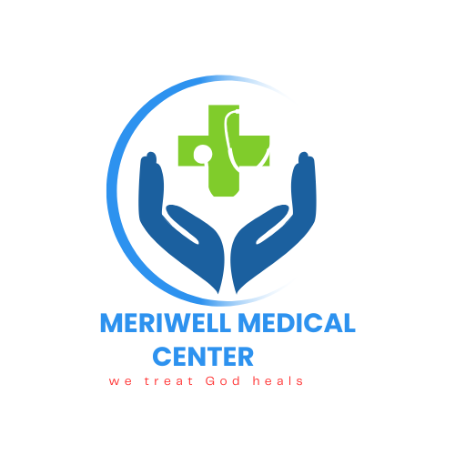
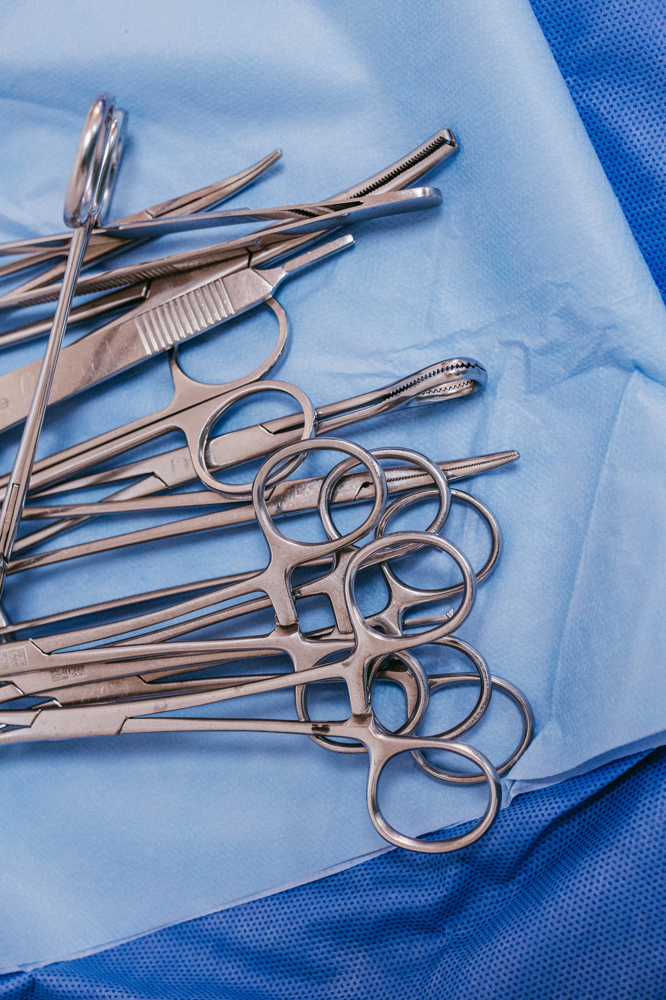

MERIWELL MEDICAL CENTER
Safe Abortion & Women's Health Clinic — Kampala, Uganda

Safe Abortion & Women's Health Clinic — Kampala, Uganda
Meriwell Medical Center provides professional abortion care in Kampala — medical abortion pills, surgical procedures, and complete women's reproductive health support. Licensed doctors, total privacy, available 24/7.
Comprehensive care from qualified medical professionals — delivered with complete confidentiality and compassion.
A safe, non-invasive option using FDA-approved medication. Carried out with full medical supervision and a 98% effectiveness rate.
Performed by experienced doctors in a sterile operating environment, with advanced pain management and same-day completion.
Specialised care for complex cases requiring advanced medical intervention, extended monitoring, and psychological support throughout.
Professional pre- and post-procedure counselling to help you make informed decisions and support your emotional wellbeing throughout the process.
Thorough pre-procedure screening to ensure your safety — including ultrasound dating, blood work, and STD testing.
Round-the-clock emergency support for urgent reproductive health needs, abortion-related complications, and critical care.
We've made our process straightforward, comfortable, and completely confidential from your first contact to full recovery.
Visit our clinic for a confidential medical examination, pregnancy confirmation, and ultrasound scan. Our doctors will determine your gestational age and recommend the safest procedure for your situation.

Your procedure — whether medical or surgical — is carried out in our fully equipped, sterile facility with licensed doctors, proper anaesthesia, and strict safety protocols. Most procedures are completed in a single visit.
After your procedure, you'll receive detailed recovery instructions, a scheduled follow-up appointment, and access to our 24/7 support line. We stay with you until you've fully recovered.
Answers to common questions about our abortion procedures, safety, confidentiality, and aftercare.
Reach out for a confidential consultation about our abortion and reproductive health services. We respond within 2 hours during business hours.
+256 759 983 865
kisaasi - Kampala, Uganda
Mon–Sun: 7:00 AM – 10:00 PM
24/7 Emergency Line Available
info@meriwell medicalcenter.site
For urgent medical emergencies, complications, or if you need immediate support, call us any time of day or night.
+256 759 983 865